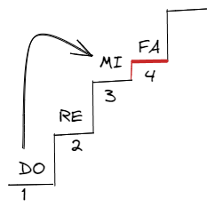

Cos'è una scala?
La scala è una successione di note con determinate caratteristiche. La definizione classica è: "successione di suoni ordinati per grado congiunto".
Da questa definizione emergono alcune parole chiave:
- grado
- congiunto
- ascendente
- discendente
Grado
Ogni nota della scala si chiama grado, come i gradini di una scala fisica.
(Immagina i gradi della scala come dei gradini)
Congiunti e disgiunti
I gradi sono congiunti quando seguono l'ordine naturale delle note (es. Do Re Mi Fa). Se si salta una nota, come in Do Mi Fa, si parla di movimento disgiunto.
Ascendente e discendente
Una scala è ascendente se va dal grave all'acuto, e discendente se scende dall'acuto al grave.
Argomenti correlati
Vai alla lezione
Vai alla lezione sul nome delle note
Parametri fondamentali del suono
Frequenza